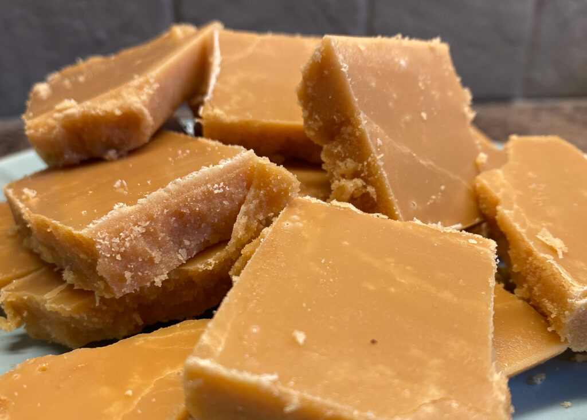

Tablet

Homemade tablet. Just like home.
Here is a recipe for traditional tablet. Just four ingredients and melts in your mouth
Ingredients
- Full Fat Milk
- Sugar
- Sweetened Condensed Milk
- Butter
Steps
- Melt sugar with milk
- Add butter
- Add Condensed milk
- Stir continuously
- Take off heat, stir
- Pour onto tray